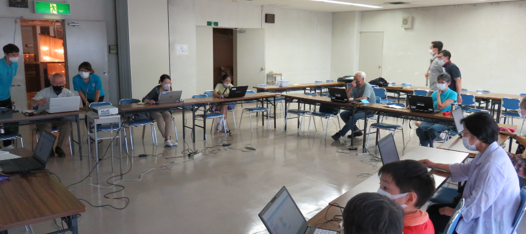
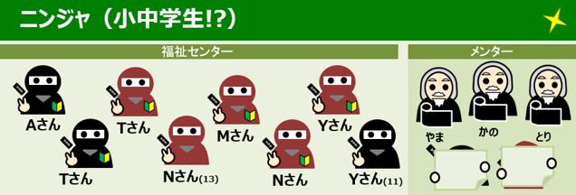
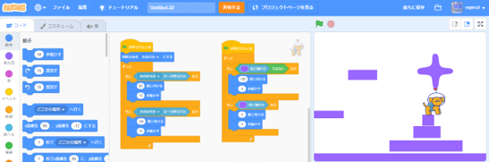
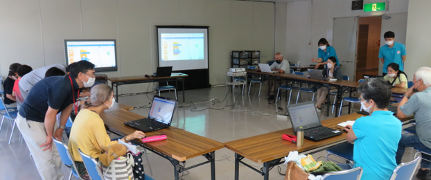
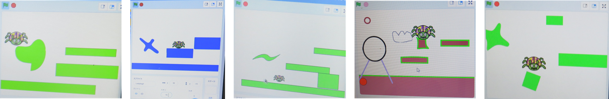

青梅市社会福祉協議会・ボランティアセンター と共催
青梅市社会福祉協議会・ボランティアセンターが主催する夏休み中高生以上の体験ボランティア。じつは年齢制限なしでの募集だったので結果、大人を対象にしたプログラミングDojoになったのですが、ほぼ全員がScratchやプログラミング未経験のため、小学生と同じ入門コースを開催しました。

リアル小中学生のニンジャは２人に加えて、今日だけ体験ボランティアなので気持ちは小中学生のニンジャ６人の合計８名が参加してくれました。なお、気持ちは小中学生の平均年齢は10歳足す50歳。小中学生は学校でScratch経験があるのだが、大人は初めて。

今日はみんなで共通テーマ、いつもの入門コース「⛅くものアスレチック」ゲームがどうやって動くのか、どうやって作っていくのかを遊びながら体験できます。

大人ニンジャのみなさんは積極的に手を挙げて質問してくれるので、どこをサポートすべきか、どんなペースで進めればよいのか分かりやすかったです。そして「なるほど」という声を何度も何度も聞くことができたのが嬉しかったです。

ひとりずつの発表はしないけれど、みんながつくった作品を見てまわって解散としました。今日の体験が参加者の何かお役に立つといいなーと思います。これを見てくれた参加者は「📨ここのお問合せ」からぜひ感想をお聞かせください。
